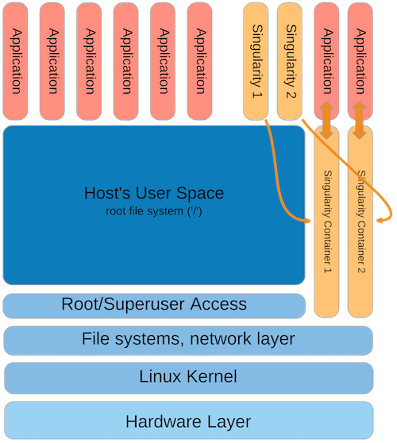

» Home
» About
» Use Cases
» Documentation
» Getting help
» Download
Overview
« Back to Documentation
Building the SAPP
The process of building/creating a Singularity Application (SAPP) container starts with defining a Singularity specfile. The specfile resembles a standard packaging format (RPM inparticular) and works in a similar manner to a packaging technology. The role of the specfile is to determine what files would go into the final SAPP package and what the SAPP container will do when it is executed.
The build process will automatically resolve dependencies (as it can), but it is always safest to assume you must manually specify all binaries, configration files, data, and operating system dependencies that are non-standard.
Singularity will take the defined files, all files that it probed which are dependencies, as well as other standard and necessary files and bundle them up into a format which Singularity can then execute at runtime.
More information about the specfile can be found on the documentation page for the specfile.
Runtime
Singularity is designed to run containers like any other appliction on the system. When it is invoked, it begins a chain of events that checks the SAPP file, and explodes the contents of the container to disk. A very important note is that all of these actions are done as the user who is running Singularity. Every file inside the container is owned by the correct user, and never root! This is very important as normal escalation pathways require root owned files. The container files are cached in the user's home directory (which is soon to be configurable) based on the container name and checksum of the SAPP file.
At this point, the commands, arguments, IO and pipes are all passed to the Singularity container executation engine which is responsible for calling the change root (chroot()) system call and thus moving the top of the file system from the host's root ('/'), to the container's root ('/') which allows the applications running within the container to satisify all dependencies solely within the container. This puts the container itself temporarily along side the host operating system as it executes the applications which exist therein.
This can be seen as follows:

File system access outside the container is provided and managed via a file handle to the current working directory where Singularity was initally called so relative paths are easily satisified.